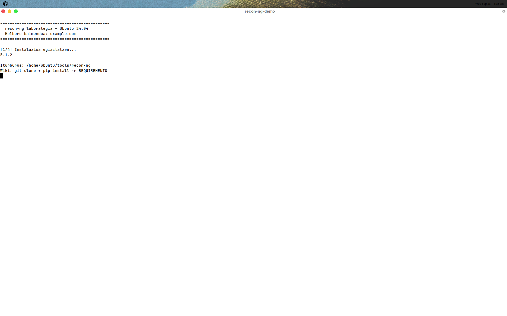
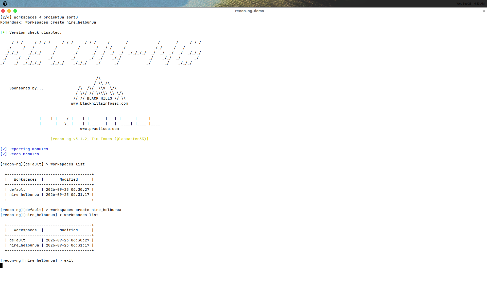
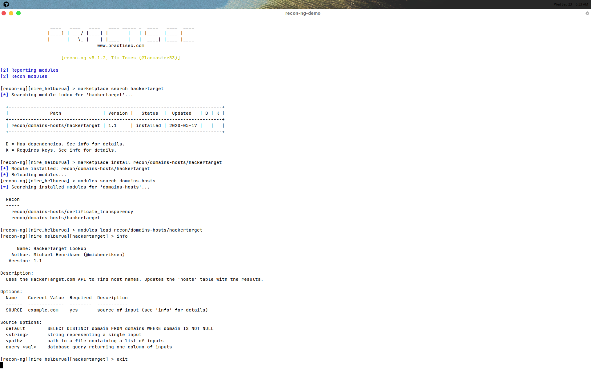
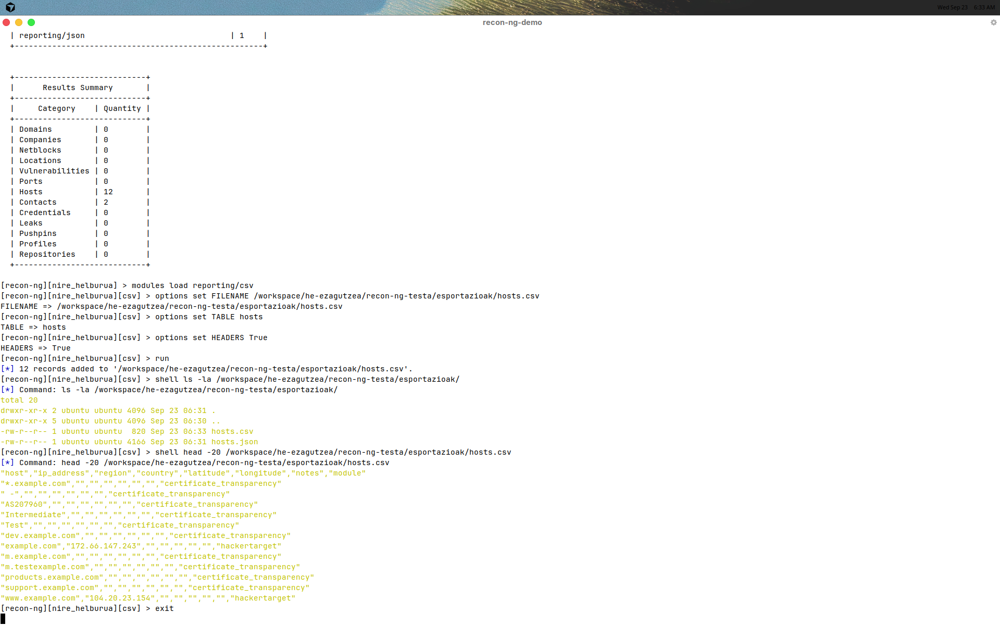
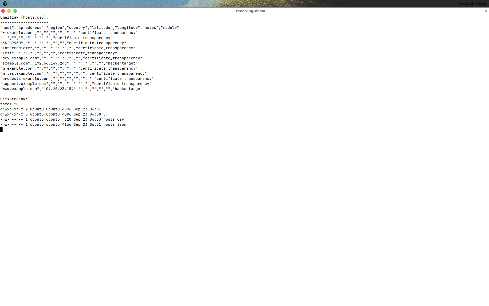

recon-ng laborategia
1. Helburua eta etika
Tresna CLI baten instalazioa, nabigazioa (Workspaces → Modules) eta domeinu baten gainean OSINT bilaketa pasiboa dokumentatzea. Emaitzak fitxategira esportatu eta pantaila-argazkiekin txostena osatu.
example.com (IANA / dokumentaziorako domeinu erreserbatua).
API key-ak ez dira txostenean agertzen (ez dira erabili).
2. Instalazioa (Ubuntu 24.04, ez Kali)
Kali-ko apt install recon-ng ez dago Ubuntu estandarrean.
Ofizialki wikiren
Installing from Source urratsak jarraitu dira:
# 1) Klona git clone https://github.com/lanmaster53/recon-ng.git ~/tools/recon-ng cd ~/tools/recon-ng # 2) Dependentsiak pip3 install -r REQUIREMENTS # 3) Abiarazi ./recon-ng --version # → 5.1.2

~/tools/recon-ng.
3. Nabigazioa: Workspaces → Modules
recon-ng-n bi maila nagusi daude. Lehenik workspace bat (proiektua / helburua) sortzen da; ondoren moduluak marketplace-tik instalatu eta kargatzen dira.
workspaces create nire_helburua— proiektua / DB bereiziamarketplace install recon/domains-hosts/hackertargetmodules load recon/domains-hosts/hackertargetoptions set SOURCE example.com→runshow hosts→ emaitzak ikusimodules load reporting/csv→ CSV esportatu (v5)
3.1 Workspace
workspaces list workspaces create nire_helburua workspaces list

nire_helburua workspace-a sortu eta zerrendatu.
Prompt-a [recon-ng][nire_helburua] bihurtzen da.
3.2 Moduluak (marketplace → load)
marketplace search hackertarget marketplace install recon/domains-hosts/hackertarget modules load recon/domains-hosts/hackertarget info

SOURCE = example.com.
4. Exekuzioa eta esportazioa
Bi modulu exekutatu dira example.com gainean (API key gabe):
recon/domains-hosts/hackertarget— hostak + IPrecon/domains-hosts/certificate_transparency— CT logetako izenak
options set SOURCE example.com run show hosts # v5-ean ez dago «db export csv» — reporting modulua erabili: modules load reporting/csv options set FILENAME .../esportazioak/hosts.csv options set TABLE hosts options set HEADERS True run
db export csv hosts.csv aipatzen dute (v4 / oroitzapen zaharra).
recon-ng v5.1.2-n db komandoak
delete|insert|notes|query|schema onartzen ditu soilik.
Esportazioa reporting/csv (edo reporting/json)
marketplace moduluekin egiten da.

reporting/csv →
hosts.csv (12 erregistro).

5. Lortutako informazioa
Iturri publikoetatik bildutako host / azpidomeinu adierazgarrienak
(hosts-garbitua.csv; CT zarata kendu ondoren):
| Host | IP | Modulua |
|---|---|---|
| example.com | 172.66.147.243 | hackertarget |
| www.example.com | 104.20.23.154 | hackertarget |
| *.example.com | — | certificate_transparency |
| dev.example.com | — | certificate_transparency |
| m.example.com | — | certificate_transparency |
| products.example.com | — | certificate_transparency |
| support.example.com | — | certificate_transparency |
| m.testexample.com | — | certificate_transparency |
CT moduluak zarata ere ekarri zuen (adib. AS207960,
Intermediate, Test) — logetan agertzen diren
kate fragmentuak; analisi-fasean iragazi behar dira. Fitxategi osoak:
esportazioak/hosts.csv eta hosts.json.
6. Entregagaiak
| Elementua | Kokapena |
|---|---|
| Txosten hau | he-ezagutzea/recon-ng-testa/txostena.html |
| Pantaila-argazkiak (5) | pantailak/01…05-*.png |
| CSV esportazioa | esportazioak/hosts.csv (+ hosts-garbitua.csv) |
| JSON esportazioa | esportazioak/hosts.json |
| Saioaren RC + transkripzioa | logs/saioa-ossoa.rc, logs/saioa-ossoa-transkripzioa.txt |
7. Ondorioak
- Ubuntu 24.04-n recon-ng iturburutik instalatu daiteke (wiki ofiziala).
- Fluxua argia da: workspace → marketplace/modulua → options → run → reporting.
- API key gabe ere HackerTarget + Certificate Transparency-rekin hostak lortu dira.
- v5-ean esportazioa
reporting/csvmoduluan dago, ezdb export-en.